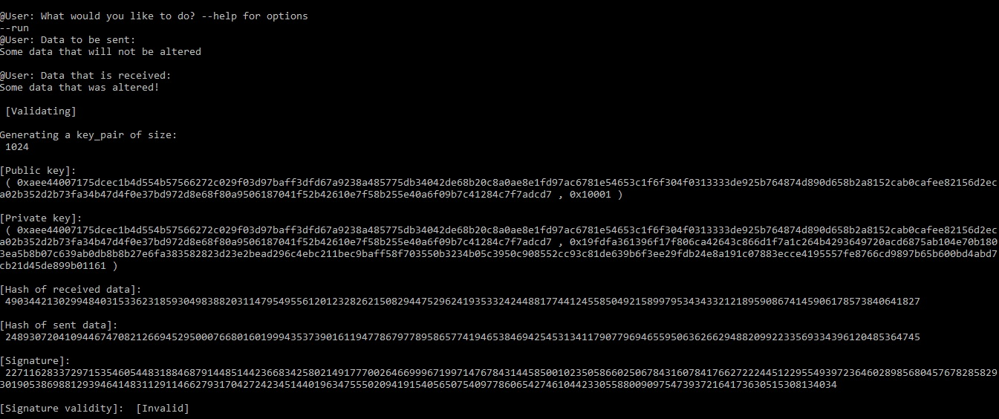

Digital Signatures
What is a digital signature?
A digital signature is a technique that is used to validate the authenticity and integrity of a message, software, or any type of digital document. Some important terms to know for this are:- Encryption: The process of converting data into another for, called cipher text.
- Decryption : The process of translating cipher text back to original data, called Plaintext.
- Public Key : A key that is known to everyone.
- Private Key : A key that is known only to whose it is.
- Authentication : A process to verify the identity of a user who attempts to view the data.
- Non-repudiation : A way to guarantee that a sender of a message cannot later deny having sent the message nor that the recipient of the message cannot deny receiving it.
- Integrity : A way to ensure the message was not altered during transmission.
- Message digest : The representation of text in a form of single string digits created from a one way hash function.
Brief History of Digital Signatures
- In 1976, Whitfield Diffie and Martin Hellman first created the idea of a digital signature scheme but only theorized this idea.
- In 1977, Ronald Rivest, Adi Shamir and Len Adleman created the RSA algorithm which itself can produce lower level digital signatures.
- All the way in 1988, Lotus Notes 1.0 was the first widely released marketed software to offer digital signatures, which used the RSA algorithm.
- In 1999, the ability to embed digital signatures into documents is added to a PDF format.
- By 2000, the ESIGN Act make digital signatures legally binding.
- In 2008, The PDF file format became an open standard to the International Organization for Standardization as ISO 320000 which uses digital signatures as part of the format.
Uses:
Digital signatures are a standard element of almost all cryptographic protocol suites but are used to meet some goals:- Data integrity - ensures the data was not altered during the transfer
- Authentication - ensures that the expected user sent the data
- Non-repudiation - ensures that the user did receive the data
How is it done?
This process can be broken down into three main steps:- Key generation: A Public Key(n,e) and Private Key(n,d) are generated by, most commonly, RSA but another algorithm could be used.
- Signing: A message digest is created by applying a hash function on the Plaintext which is then encrypted using the Private Key of the sender. This results in the digital signature.
- Signature verification: The receiver decrypts the signature using the public key of the sender and computes the message digest to ensure integrity.
A RSA key pair is created with a certain number of bits, for our examples; we are only using a size of 1024 which is not the most secure and naturally, the larger the bit size, the harder it is to decrypt. With the creation of a key pair, it contains a public as well as a private key and both at some point within the encryption and verification of the signature.
Once a key pair is created, the message digest is created on the Plaintext which is encrypted using the private key by raising the data to the power 'd' (which is taken from the private key) modulo 'n' (taken from the public key).
Once the data is received, it is checked to see if the data was altered in some way. The first step is to calculate the hash value of the signed message. The original signing process is used again. Next, the signature is decrypted by using the public key that is correspondent to the private key that was used during the signing of the message. Lastly, the two hash values are compared and if they are different; the data may have been altered or the signing had an error.
RSA module size
The different bit sizes used when generating the RSA key pair lies directly with how secure the key will be. By looking at the General Number Field Sieve (GFNS), you can calculate the 'strength' of the key based on the RSA modulus size. The formula for GFNS is:where n is the number that is being factored. Evaluating the above expression at 2b is a rough approximation of the time needed to factor a b-bit integer. Below is a table showing the bit-length of the evaluation at 21024, 22048, ...
| RSA modulus size | Complexity bit-length |
| 1024 | 86.76611925028119 |
| 2048 | 116.8838132958159 |
| 3072 | 138.7362808527251 |
| 4096 | 156.49695341791272 |
| 7680 | 203.01873594416484 |
| 8192 | 208.47248637388102 |
| 15360 | 269.38477262126889 |
The difference in strength of the increasing RSA modulus size can be seen in the time it takes to encrypt and validate a digital signature. Given the screenshot below, one can notice that the time it took for a bit size of 1024 is very low with a time of 0.25 seconds. With a relatively large improvement, even the 2048 RSA modulus size was able to have a time over 3 times that of the 1024 bit size. This is shown even more with the 3072 bit size with a whopping time of 8.87 seconds which is over 10 times longer than that of 2048 bits.
To show this further; a graph was constructed, using the text based program, that kept track of the average time it took for each bit size of the key pair, increased by 1024 each time.
Notes:
- This was done by running 10 threads at a time which did result in a little bit of a slower process than running a single run at a time, or using the demo on the Demonstration page but increased the overall efficiency instead of running each test 10 individual times.
- The data that was sent for each was consistent with a byte size of 9 for sent and received data.
- The average time is on the y-axis because it is dependant on the bit size.
As seen by the graph, increasing the bit size of the key pair almost increases the average time at an exponential rate, which starts to drastically take off starting at 8192 bits which had an average time of 3.23 minutes while increasing the bit size to 11,264 bits had a whopping time of over 24 minutes, on average.
As an aside:
Additional tests were ran on the website version; the demonstration version on the website does not produce an output with a key pair of the bit size of 13,312 because it cannot handle it. Also, the byte size of the data being sent/received made little difference until the key pair bit size was 9216 bits and the data being sent was 667,284 bytes which doubled the time it took of sending 9 bytes of data.Note:
The code that produced these snippets can be found on: GitHubThis can be played around with using the Time difference page.
Additional Note: This only allows two different bit sizes to be checked
Example
A sample program was created to show data, in this case it is only text, going through the steps of having a digital signature made for it. Then, a user can enter either the same text or something else to show the 'data' being altered or not. Lastly, it shows whether the signature is valid or not. The screenshots provided also show the public and private keys along with the hashes of the original and new data.Correct signature:

This example has the user enter two types of data that are the same, i.e. not tampered with. Since the data was not tampered with, the hashes or the new data are the same, i.e. the signatures are the same and the signature is verified.
Incorrect signature:
This example has the user enter two types of data that are not the same, i.e. tampered with. Since the data was tampered with, the hashes or the new data are different, i.e. the signatures are different and the signature is not verified.
Note:
The code that produced these snippets can be found on: GitHubResources:
- “Security Tip (ST04-018).” Cybersecurity and Infrastructure Security Agency CISA, 2020, us-cert.cisa.gov/ncas/tips/ST04-018.
- U.S. Department of Commerce, Digital Signature Standard (DSS). Gaithersburg: National Institute of Standards and Technology, July. 2013, http://dx.doi.org/10.6028/NIST.FIPS.186-4
- Richard Crandall and Carl Pomerance. Prime Numbers: A Computational Perspective (2001). 2nd edition, Springer. ISBN 0-387-25282-7. Section 6.2: Number field sieve, pp. 278–301.